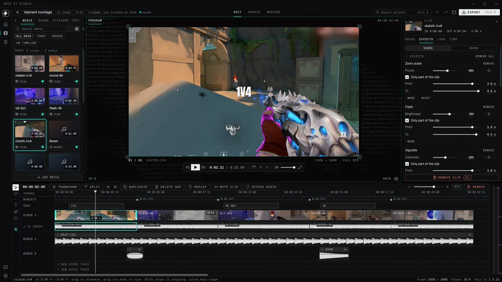
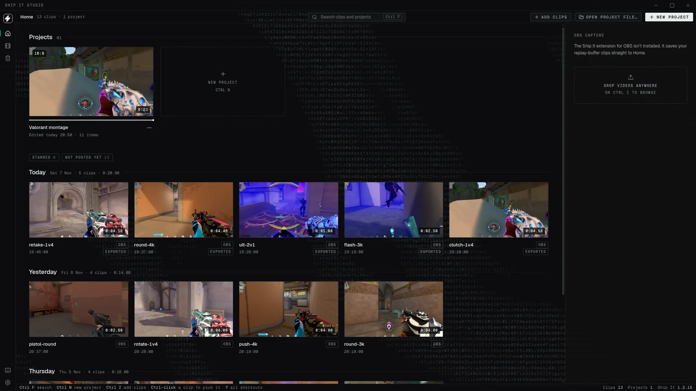
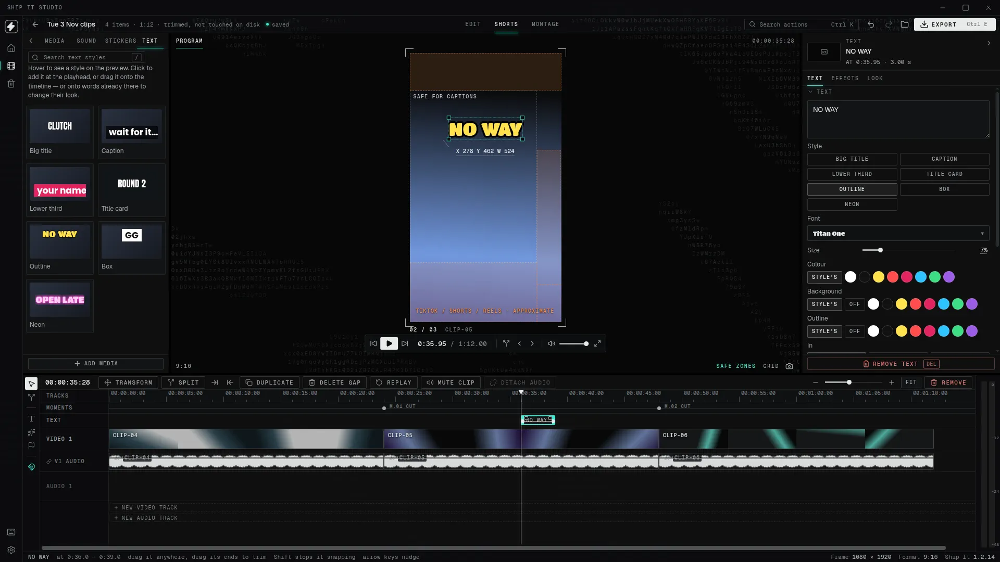
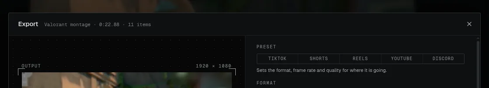

the editor for streamers
The stream is long. The highlight is short.
Bring in your recordings, cut them on a real timeline, and export a reel for YouTube, TikTok or Shorts.
Download for Windows
ShipItStudio-1.2.15-Setup.exe · about 284 MB · Windows 10 or 11, 64-bit
- exports
- mp4 16:9 · 9:16 · mp3 · gif
- quality
- up to 4k · 120 fps
- yours
- originals are never changed




Video, photos, sound and titles on tracks. Trim, split, speed, reverse and keyframes, with an Effects tab beside them.